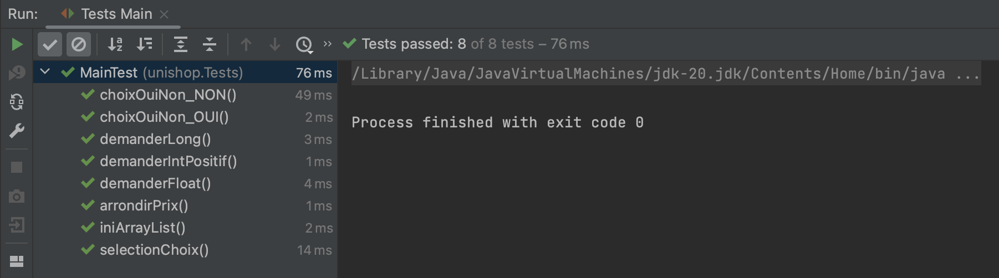
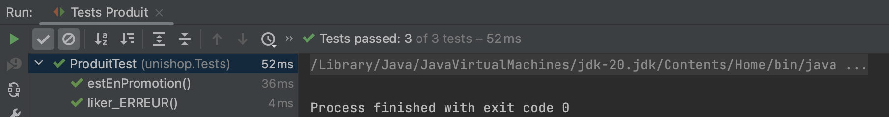
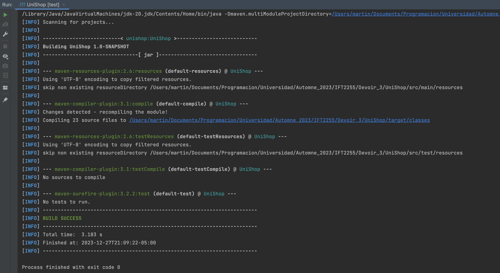

Information de l'équipe
Nom de l'équipe : Les trois mousquetaires
Lien vers dépôt GitHubMembres de l'équipe :
- Martin Medina
- Matricule : 20235219
- Courriel : martin.medina@umontreal.ca
- Temps mis : 30 heures
- Mandi Vigier
- Matricule : 20237155
- Courriel : mandi.teo.vigier@umontreal.ca
- Temps mis : 30 heures
- Étienne Mitchell-Bouchard
- Matricule : 20243430
- Courriel : etienne.mitchell-bouchard@umontreal.ca
- Temps mis : 40 heures
- Cédric Kamdem
- Matricule : 20228302
- Courriel : cedric.kamdem@umontreal.ca
- Temps mis : 20 heures
Distribution des tâches
| Tâche | Martin Medina | Mandi Vigier | Étienne Mitchell-Bouchard | Cédric Kamdem |
|---|---|---|---|---|
| Tâche 0 | 20% | 30% | 30% | 20% |
| Tâche 1 | 22.5% | 22.5% | 35% | 20% |
| Tâche 2 | 5 tests (25%) | 4 tests (25%) | 4 tests (25%) | 4 tests (25%) |
| Tâche 3 | 30% | 20% | 20% | 30% |
| Total | 24% | 24% | 29% | 23% |
Annonce de distribution du travail
Nous assurons que les 4 coéquipiers ont fait un travail équivalent et désirent avoir la même note.
Tâche 0 : Diagramme de classes révisé

Tâche 1 : Implémentation en Java
Vous trouverez le code source du projet et le fichier JAR dans le dossier Devoir_3/Implémentation du dépôt GitHub du projet.
Tâche 2 : Tests unitaires
Tests de Main :
Tests de Acheteur :

Tests de Produit :
Tests de Billet :

Tests de Evaluation :

Tous les tests (Lifecycle) :
Bonus :
Veuillez noter qu'on a implémenté le bonus de créer une action
GitHub qui roulera nos tests à chaque commit pour assurer que rien n'est brisé.
Vous trouverez l'implémentation dans : .github/workflows/run-tests.yml
Tâche 3 : Livraison et documentation
Statistiques GitHub
On a fait l'erreur de ne pas avoir utilisé GitHub dès le début, donc à la fin on a fait le commit de tout le contenu.
Cependant, nous certifions avoir divisé le travail équitablement et nous désirons avoir tous la même note.